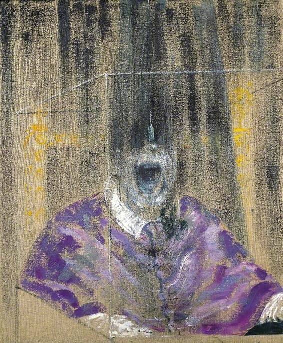

Photos
Face of a man who saw the fly people without their helmets

In-house artist's composite rendering of what humans most likely looked like prior to the invasion
As the citizens of earth continue their grueling indenture to the fly people of Gorgon-V our vigilant reporting on the world of novelty cheese sculptures continues apace
May Henderson has fashioned a lovely cow out of some cave aged Gruyere. Husband claims he heard it moo!
Billy Wimbeldon updates us on his struggle to make a calder-style installation out of cottage cheese.
A terrible death at the hands of the fly people await us all. The innocent take refuge in a God who would never let this happen, the wise in stark madness. Get out, get out while you still can.
Face of a man who saw the fly people without their helmets
In-house artist's composite rendering of what humans most likely looked like prior to the invasion